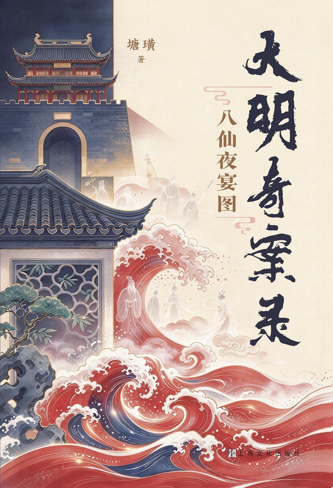
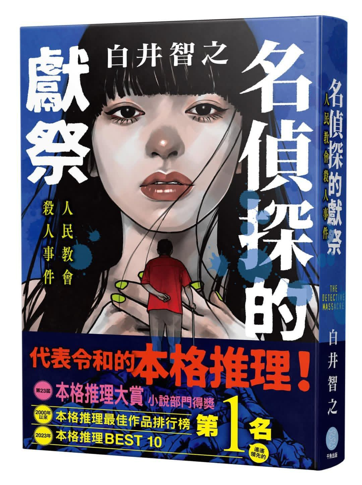
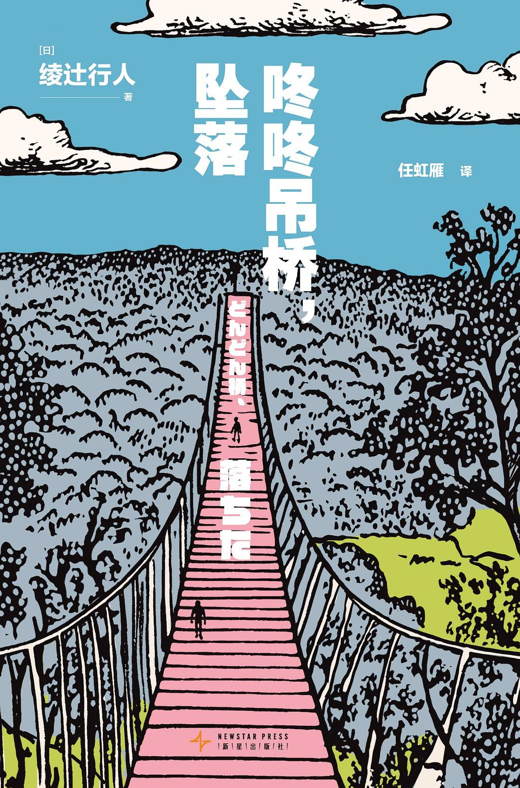
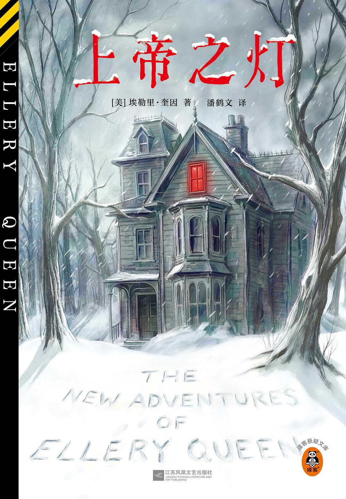

No.01  大明奇案录·八仙夜宴图 本周新增 塘璜 上海文化出版社 2026年12月 暂无 综合分 32.00 AI 推荐：塘璜本土古风悬疑新作，2026年出版，属推理悬疑小说。作者: 塘璜 出版社: 上海文化出版社 出版时间: 2026-12
No.02  名偵探的獻祭 本周新增 白井智之 千鱼娛樂 2026年12月 暂无 综合分 32.00 AI 推荐：白井智之推理新作，2026年出版，纯正本格悬疑。作者: 白井智之 出版社: 千鱼娛樂 出版时间: 2026-12
No.03  咚咚吊桥，坠落 本周新增 [日] 绫辻行人 新星出版社 2026年10月 7.9（158人评价） 综合分 144.81 AI 推荐：绫辻行人新本格短篇集，诡计集大成，1999年榜单佳作，2026年新版推理迷必读。◎新本格推理旗手 绫辻行人 集***诡计之大成的经典短篇集 ◎1999年度本格推理BEST10榜单 第3位 ◎异想天开设诡局 妙笔惊醒梦中人 -------...
No.04  上帝之灯 本周新增 [美] 埃勒里·奎因 江苏凤凰文艺出版社 2026年4月 7.3（349人评价） 综合分 121.04 AI 推荐：奎因经典推理短篇集，九道谜题，2026年出版如果你自认能够洞穿推理小说的一切诡计，不妨来挑战这九道难题—— 一栋石屋，在一夜大雪后踪迹全无，不留一丝痕迹，它究竟是怎么消失的？ 一条珍珠项链，在庄园内不...
5 gloriously unhinged speculative mysteries and thrillers rss:CrimeReads · 2026-11-19 · 本周新增 犯罪小说网站推荐五部风格诡奇的悬疑推理小说，作者谈及自己新作《The Sleeper》的创作风格。
15 Books Like Verity: Dark Psychological Thrillers to Read After Colleen Hoover (2026) rss:Mystery Tribune · 2026-11-19 · 本周新增 悬疑书讯网站盘点15本类似科琳·胡佛《Verity》的暗黑心理惊悚小说，含隐藏手稿与危险执念等主题。
Elly Griffiths’ 5 favorite female detectives in fiction rss:CrimeReads · 2026-11-18 · 本周新增 推理作家艾莉·格里菲斯列举她最喜爱的五位虚构女侦探，从文学史角度谈女性破案者。
Lew Archer Books In Order: All 18 Ross Macdonald Novels (2026) rss:Mystery Tribune · 2026-11-19 · 本周新增 按出版顺序梳理罗斯·麦克唐纳全部18部卢·阿彻系列侦探小说，含简介、短篇及入门推荐。
Jane Whitefield Books In Order: All 10 Thomas Perry Novels (2026) rss:Mystery Tribune · 2026-11-19 · 本周新增 按顺序介绍托马斯·佩里全部10部简·怀特菲尔德系列惊悚小说，含简介与系列停写十年缘由。
Travis McGee Books In Order: All 21 John D. MacDonald Novels (2026) rss:Mystery Tribune · 2026-11-19 · 本周新增 按顺序梳理约翰·D·麦克唐纳全部21部特拉维斯·麦吉系列侦探小说，含简介、影视改编与入门建议。
Catherine Townsend on treating dating like detective work, and vice versa rss:CrimeReads · 2026-11-17 · 本周新增 约会专栏作家凯瑟琳·汤森谈约会与侦探工作的相似之处，探讨二者如何相互类比。
5 gloriously unhinged speculative mysteries and thrillers rss:CrimeReads · 2026-11-19 · 本周新增 精彩摘录：当一位评论家对我即将出版的惊悚小说《沉睡者》赞不绝口，说“我就喜欢她身上那股不对劲的劲儿”时，我
15 Books Like Verity: Dark Psychological Thrillers to Read After Colleen Hoover (2026) rss:Mystery Tribune · 2026-11-19 · 本周新增 精彩摘录：喜欢科琳·胡佛的《维瑞蒂》吗？这15本类似《维瑞蒂》的无剧透小说，从朱莉·克拉克的《捉刀人》到R.F. Kuan……
Elly Griffiths’ 5 favorite female detectives in fiction rss:CrimeReads · 2026-11-18 · 本周新增 精彩摘录：我相信夏娃立刻就知道是谁杀了亚伯，尽管不可否认只有一个嫌疑人。
Lew Archer Books In Order: All 18 Ross Macdonald Novels (2026) rss:Mystery Tribune · 2026-11-19 · 本周新增 精彩摘录：刘·阿彻系列书籍顺序：罗斯·麦克唐纳的全部18部小说，从《移动的目标》（1949）到《蓝色锤子》（1976），以及c
Jane Whitefield Books In Order: All 10 Thomas Perry Novels (2026) rss:Mystery Tribune · 2026-11-19 · 本周新增 精彩摘录：简·怀特菲尔德系列按顺序：托马斯·佩里全部十部小说，从《消失行动》（1995年）到最终作《谎言树》
Travis McGee Books In Order: All 21 John D. MacDonald Novels (2026) rss:Mystery Tribune · 2026-11-19 · 本周新增 精彩摘录：特拉维斯·麦基系列小说顺序：全部21部约翰·D·麦克唐纳小说，从《深蓝告别》（1964年）到《孤独的银雨》
Catherine Townsend on treating dating like detective work, and vice versa rss:CrimeReads · 2026-11-17 · 本周新增 精彩摘录：当我在伦敦《独立报》担任约会专栏作家时，我常常指出约会与